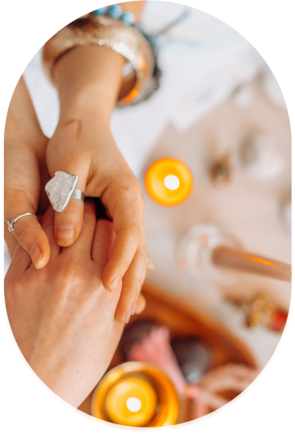
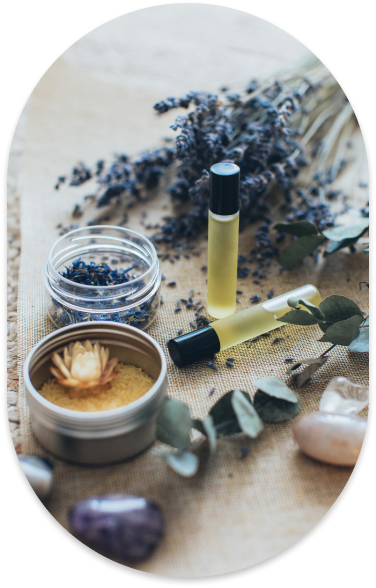
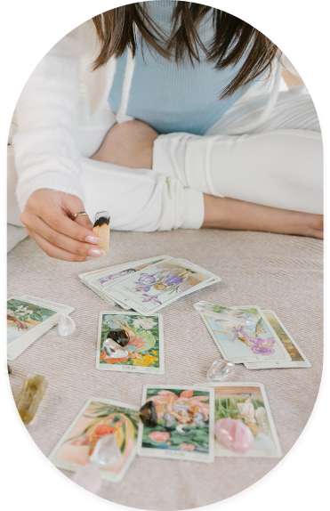
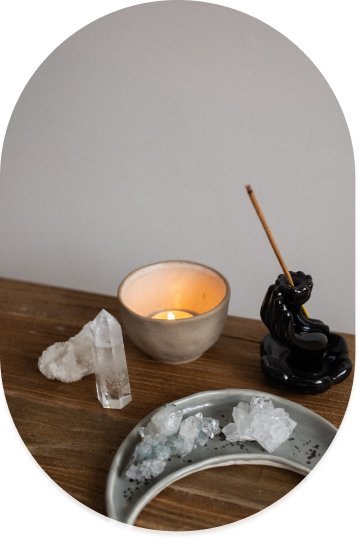
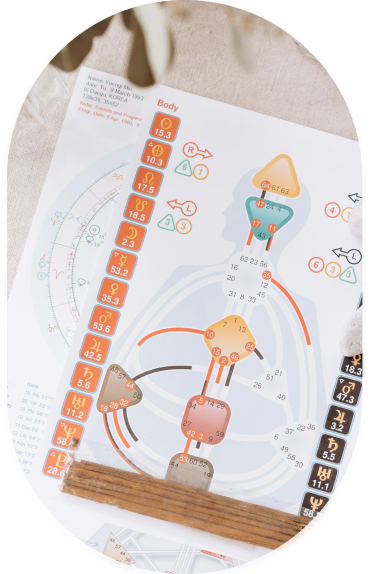
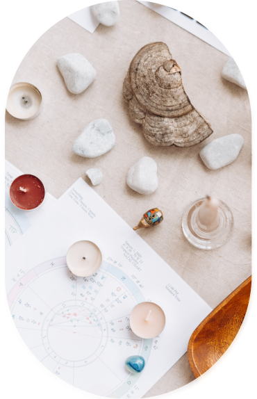

Lectura del Aura
Esta Terapia es para ti si:
- Te sientes perdid@ y sin rumbo, puede ser una guía en tu camino.
- Cuando te sientes desconectad@ puede ser el regreso a tu esencia y poder.
- Para reconectar con tu propósito, misión de vida y amor propio.
- Para identificar bloqueos y desequilibrios energéticos.
- Para limpiar tu campo energético.

Flores de Bach
Esta Terapia es para ti si:
- Deseas reconectar con tu ser.
- Deseas sanar y liberar tus miedos, estrés, la angustia, ansiedad, nerviosismo, sensación de soledad, hipersensibilidad, etc.
- Eres consciente que somatizas en tu cuerpo físico emociones y pensamientos que limitan tu libertad de ser.
- Te conectas con tu voluntad, constancia, amor hacia tu bienestar y tu propia sanación.

Tarot Terapéutico
Esta Terapia es para ti si:
- Estás buscando generar desarrollo personal y tomar consciencia de tus procesos.
- Estás buscando nuevas perspectivas para entender y enfrentar tu presente.
- Tienes disposición a escuchar consejos, mensajes, posibilidades, bloqueos y aprendizajes que el Tarot te entrega.
- Sabes que tú eres el creador o creadora de tu futuro a partir de las acciones en el presente.

Oráculo de la Energía Femenina
Esta Terapia es para ti si:
- Deseas conectar con tu energía femenina, con tus ancestras y todo la energía de tu linaje femenino.
- Deseas conectar con tu ser y encontrar las claves y respuestas dentro de ti, escuchando los mensajes de las arcanas.
- Deseas recibir mensajes de las Diosas de Latinoamérica, Abuelas, Elementales, Sacerdotisas, Arcangelinas y Maestras.
- Deseas escuchar a tu corazón, a tu subconsciente a través de esta hermosa herramienta que abre puertas al autoconocimiento y tu verdad.

Thetahealing
Esta Terapia es para ti si:
- Deseas sanar traumas, miedos, resentimientos, inseguridades, enfermedades, dolores, abundancia, vínculos y cualquier otro aspecto de tu vida que quieras cambiar.
- Deseas realizar cambios en tu sistema de creencias, eliminando las creencias que te están limitando en tu presente y reemplazarlas por otras positivas y expansivas que te permitan crear una nueva realidad.
Reiki Angelical
Esta Terapia es para ti si:
- Quieres conectar con la energía de los Ángeles y Arcángeles.
- Deseas armonizar y limpiar tu cuerpo, mente, emociones y espíritu con la energía angelical .

Ciclo de lectura y sanación
Esta Terapia es para ti si:
- Siempre has admirado a la luna, su belleza, su ciclicidad y su energía.
- Deseas recibir mensajes a través del Tarot y Oráculo en Luna Nueva y en Luna Llena, canalizados de manera grupal por tu signo solar.
- Deseas recibir irradiación lunar a través de la Diosa Inanna.
- Deseas invertir tiempo en ti, auto sanarte y comprometerte con tus procesos.

Soltando vinculos
Esta Terapia es para ti si:
- Sientes que te cuesta soltar a un vínculo.
- Te sientes estancad@ en un vínculo, sin poder cerrar el ciclo.
- Sientes que te preocupas demasiado o recuerdas con mucha nostalgia a ese vínculo.

Oráculo Alkimya
Esta Terapia es para ti si:
- Deseas conectar con tu esencia, evolución, consciencia y desarrollo personal.
- Deseas conectar con tu ser y encontrar las respuestas dentro de ti, porque tu eres tu propio maestro o maestra.
- Deseas recibir mensajes desde los siete reinos planetarios que corresponden vibracionalmente a los siete chakras principales.
- Deseas escuchar a tu corazón, a tu subconsciente a través de esta hermosa herramienta.